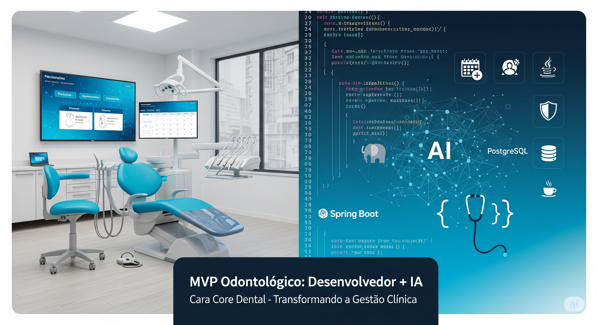

MVP Sistema Odontol�gico: A Combina��o Perfeita entre Experi�ncia Humana e IA
Este artigo apresenta o desenvolvimento do Cara Core Dental, um MVP de sistema odontol�gico que demonstra como a colabora��o entre desenvolvimento experiente e intelig�ncia artificial pode acelerar significativamente a entrega de produtos tecnol�gicos de qualidade no setor m�dico.
O Desafio: Modernizar a Gest�o Odontol�gica
O setor odontol�gico brasileiro ainda enfrenta desafios significativos na digitaliza��o de seus processos. Muitos consult�rios ainda dependem de agendas f�sicas, planilhas Excel e sistemas legados que n�o atendem �s demandas modernas de:
- Experi�ncia do paciente digitalizada e intuitiva
- Gest�o eficiente de consultas e prontu�rios
- Conformidade com a LGPD e seguran�a de dados
- Escalabilidade para cl�nicas de diferentes portes
- Integra��o com ferramentas modernas de comunica��o
A Estrat�gia: MVP com Foco em Resultados R�pidos
Em vez de desenvolver um sistema complexo que levaria anos para chegar ao mercado, optamos pela abordagem MVP (Produto M�nimo Vi�vel):
Funcionalidades Core Implementadas:
- Sistema de Agendamento Completo - CRUD com controle de conflitos
- Gest�o de Pacientes e Dentistas - Cadastros completos com especialidades
- Sistema de Prontu�rios - Upload de imagens radiol�gicas
- Dashboard Anal�tico - M�tricas em tempo real
- Autentica��o Robusta - Spring Security 6 com controle de acesso
- Multi-Ambiente - H2 para desenvolvimento, PostgreSQL para produ��o
- Conformidade LGPD - Controle de consentimento e auditoria
Stack Tecnol�gica Moderna:
- Backend: Spring Boot 3.2.6 + Java 17
- Frontend: Thymeleaf + Bootstrap 5.3 + Chart.js
- Banco: PostgreSQL 15 + Flyway migrations
- Infraestrutura: Docker + docker-compose
- Qualidade: 545 testes unit�rios (100% aprova��o)
O Diferencial: Desenvolvedor Experiente + IA
O Que Trouxe a Experi�ncia Humana:
- Arquitetura S�lida: Decis�es fundamentadas sobre padr�es, estruturas e tecnologias
- Boas Pr�ticas: Implementa��o correta de seguran�a, testes e versionamento
- Vis�o de Neg�cio: Compreens�o das necessidades reais do setor odontol�gico
- Debugging Experiente: Resolu��o r�pida de problemas complexos de integra��o
Como a IA Acelerou o Desenvolvimento:
- Produtividade: Gera��o r�pida de c�digo boilerplate e estruturas repetitivas
- Qualidade: Sugest�es de melhorias e detec��o de poss�veis problemas
- Documenta��o: Cria��o autom�tica de documenta��o t�cnica e de usu�rio
- Testes: Gera��o de casos de teste abrangentes e cen�rios edge
Li��es Aprendidas
1. IA como Acelerador, N�o Substituto
A intelig�ncia artificial se mostrou uma ferramenta poderosa para:
- Acelerar tarefas repetitivas
- Sugerir implementa��es alternativas
- Documentar processos automaticamente
Mas a experi�ncia humana continua insubstitu�vel para:
- Decis�es arquiteturais cr�ticas
- Compreens�o de requisitos de neg�cio
- Valida��o de qualidade e seguran�a
2. MVP Bem Estruturado Facilita Evolu��o
Ao focar nas funcionalidades essenciais com uma base t�cnica s�lida:
- 22 migra��es Flyway garantem evolu��o controlada do banco
- Pool de conex�es otimizado prepara para escalabilidade
- Padr�o DTO consistente facilita manuten��o futura
- Multi-perfil permite desenvolvimento �gil
3. Import�ncia da Documenta��o desde o In�cio
A documenta��o t�cnica e de usu�rio foi desenvolvida paralelamente ao c�digo, resultando em:
- Onboarding mais r�pido de novos desenvolvedores
- Facilidade para demonstra��es comerciais
- Base s�lida para treinamento de usu�rios finais
O Pr�ximo Passo: Investimento em UX/UI
Transpar�ncia total: Este — um MVP funcional que demonstra todas as capacidades t�cnicas, mas requer investimento adicional em design e experi�ncia do usu�rio para chegar ao produto final.
Melhorias Identificadas para a Pr�xima Fase:
- Design Profissional: Refinamento visual e identidade de marca
- UX Mobile: Otimiza��o completa para dispositivos m�veis
- Fluxos Intuitivos: Simplifica��o da navega��o complexa
- Performance: Otimiza��o de tempos de resposta
- Calend�rio Avan�ado: Interface visual com drag-and-drop
Impacto Esperado no Mercado
Com uma base t�cnica s�lida e foco nas necessidades reais do setor, esperamos contribuir para:
- Digitaliza��o Acess�vel: Sistema robusto com custo acess�vel para cl�nicas de todos os portes
- Experi�ncia do Paciente: Interface moderna que facilita agendamentos e acompanhamento
- Efici�ncia Operacional: Automa��o de processos manuais e redu��o de retrabalho
- Conformidade Regulat�ria: Atendimento completo �s exig�ncias de prote��o de dados
Conclus�o: O Futuro — Colaborativo
Este projeto demonstra que o futuro do desenvolvimento de software n�o est� na substitui��o do desenvolvedor pela IA, mas na colabora��o inteligente entre ambos:
- Experi�ncia humana traz vis�o estrat�gica, conhecimento de dom�nio e qualidade t�cnica
- Intelig�ncia artificial acelera implementa��o, sugere melhorias e automatiza tarefas repetitivas
- Resultado: Produtos de maior qualidade entregues em menos tempo
Para consult�rios odontol�gicos interessados em modernizar sua gest�o ou desenvolvedores curiosos sobre esta abordagem colaborativa, o c�digo est� dispon�vel como open source. Ver reposit�rio
Hashtags
Contato
- E-mail: suporte@caracore.com.br
- Site: www.caracore.com.br
- LinkedIn: Cara Core Informática
Conecte-se conosco no LinkedIn para mais conte�dos sobre desenvolvimento e inova��o tecnol�gica!
Seguir no LinkedIn